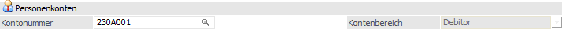
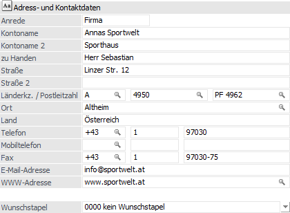
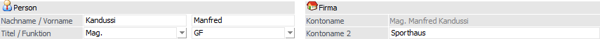
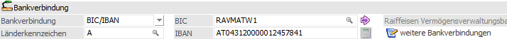
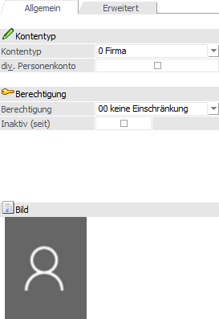
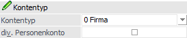
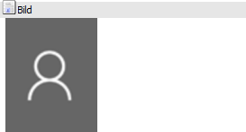
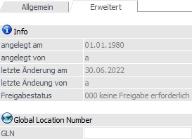
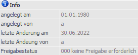

In dem Register "Stamm" können die Grundstammdaten des Personenkontos erfasst werden. Hierzu zählen u.a. die Bereiche "Adresse- und Kontaktdaten" und "Bankverbindungen".
Hinweis
Weitere Informationen bezüglich der Anlage von Personenkonten und den Buttons des Programms "Personenkonten" sind dem Kapitel Personenkonten zu entnehmen.

Folgende Eingabefelder, Einstellungen und Informationen stehen zur Verfügung:
Personenkonten

Ø Kontonummer
An dieser Stelle wird die Kontonummer des Personenkontos eingetragen. Diese ist max. 20stellig und alphanumerisch.
Ø Kontenbereich
Bei der Neuanlage eines Personenkontos kann an dieser Stelle hinterlegt werden, ob es sich um einen "Debitoren" (Kunden) oder einen "Kreditoren" (Lieferanten) handelt. Ansonsten ist dieses eine statische Information, d.h. wurde das Konto einmal gespeichert, so kann der Kontenbereich nicht mehr verändert werden.
Hinweis
Während der Neuanlage wird der gewählte Kontenbereich mit der neuen Personenkontonummer verglichen. Wenn die Nummer nicht zum gewählten Bereich lt. Einstellungen in den FIBU-Parametern passt, so wird auf dieses hingewiesen.
Adress- und Kontaktdaten

Ø Anrede
max. 255stellig, alphanumerisch
Ø Kontoname / Kontoname 2 (bei Personenkonten des Kontentyps "Firma") bzw. Nachname / Vorname (bei Personenkonten des Kontentyps "Person")
2 x 255stellig, alphanumerisch
Ø Titel / Funktion (nur bei Personenkonten des Kontentyps "Person")
Hier kann der Titel bzw. eine Funktion hinterlegt werden. Ist ein Titel oder eine Funktion noch nicht vorhanden, so wird diese(r) durch das Eintragen in das Feld "Titel" bzw. "Funktion" automatisch angelegt.
Hinweis
Sobald ein Titel bzw. eine Funktion in keinem Interessenten, Personenkonto und Kontakt mehr zugeordnet ist, so wird diese(r) automatisch gelöscht und steht somit auch im Feld "Titel" bzw. "Funktion" nicht mehr zur Verfügung.
Ø Zu Handen
255stellig, alphanumerisch
Ø Straße / Straße 2
2 Zeilen mit je max. 255 Stellen
Ø Länderkennzeichen
Durch Eingabe des Länderkennzeichens (3stellig) wird lt. Länderstamm das Land sowie die Landesvorwahl bereits automatisch vorbelegt.
Ø Postleitzahl / Postleitzahl 2
An dieser Stelle wird die Postleitzahl hinterlegt. Durch Drücken der Taste F9 kann nach allen bereits angelegten Postleitzahlen gesucht werden. Wird die entsprechende Postleitzahl gefunden, so wird auch der Ort automatisch übernommen und muss nicht extra eingegeben werden.
Hinweis
In das Feld "Postleitzahl 2" wird in der Regel das Postfach (wenn vorhanden) hinterlegt.
Ø Ort
In diesem Feld wird der Ort der Anschrift hinterlegt (max. 50stellig). Auch hier kann durch Drücken der F9-Taste nach allen bereits angelegten Orten mit ihren Postleitzahlen gesucht werden.
Ø Land
Hier erfolgt die Hinterlegung des Landes der Anschrift (max. 30stellig). Durch Eingabe des Länderkennzeichens wird dieses Feld automatisch gefüllt.
Ø Telefon / Mobiltelefon / Fax
Hier können die Landesvorwahl, die Ortsvorwahl und die Telefonnummer für Telefon, Mobiltelefon und Fax eingetragen werden.
Ø E-Mail-Adresse
An dieser Stelle kann die allgemeine E-Mail-Adresse des Kontos hinterlegt werden (max. 100stellig). Nach Eingabe der Mailadresse erfolgt eine Prüfung ob…
ü … die Adresse aus mindestens 6 Zeichen besteht.
ü … das "@"-Zeichen und ein "." (der Punkt muss nach dem "@" sein) vorkommen.
ü … mindestens 1 Zeichen vor dem "@", zwischen dem "@" und dem ".", und nach dem "." ist.
Werden diese Kriterien nicht erfüllt, so wird dies mit einer entsprechenden Meldung angezeigt; die Mailadresse kann jedoch trotzdem gespeichert werden.
Ø WWW-Adresse
In diesem Feld kann die Internetadresse des Personenkontos hinterlegt werden.
Ø UID-Nummer (Subkonto)
Handelt es sich bei dem aktuellen Konto um ein FIBU-Subkonto, so kann hier die UID-Nummer (Umsatzsteuer-Identifikationsnummer) des Subkontos für abweichende Leistungsempfänger (für die Zusammenfassende Meldung) erfasst werden. Ansonsten steht das Feld nicht zur Verfügung.
Hinweis
Grundsätzlich kann die UID-Nummer direkt auf Gültigkeit überprüft werden, wobei eine erweiterte Prüfung nur in Mandanten mit Landeskennzeichen "Österreich" und "Deutschland" möglich ist. Die Prüfung selber wird über das Icon neben dem Eingabefeld ausgelöst, wobei folgende Stati möglich sind:
ü  - keine Prüfung möglich
- keine Prüfung möglich
Es wurde noch
keine bzw. keine (vom Aufbau her) gültige UID-Nummer hinterlegt. Eine Prüfung
ist somit nicht möglich.
ü  - Prüfung möglich
- Prüfung möglich
Eine Prüfung ist
generell möglich, wobei es sich um einen deutschen Mandanten mit einer deutschen
zu prüfenden UID-Nummer handelt oder um einem Mandanten mit Landeskennzeichen
ungleich "Österreich". Bei diesen Konstellationen wird nur die Prüfung der Stufe
1 unterstützt!
Ob eine Prüfung erfolgen oder ein Protokoll ausgegeben werden
soll, kann durch Anwahl des Icons entschieden werden.
ü  - Erweiterte Prüfung möglich und noch nicht
erfolgt
- Erweiterte Prüfung möglich und noch nicht
erfolgt
Eine Prüfung ist generell möglich, wobei die Prüfung der Stufe 2 noch
nicht ausgeführt wurde. Bei Anwahl des Icons stehen die unterschiedlichen
Prüfungsstufen bzw. ein Protokoll zur Auswahl zu Verfügung.
ü  - UID-Nummer ist gültig
- UID-Nummer ist gültig
Es wurde die
Prüfung der Stufe 2 durchgeführt und die UID-Nummer wurde als gültig
erkannt.
ü  - UID-Nummer ist ungültig
- UID-Nummer ist ungültig
Es wurde die
Prüfung der Stufe 2 durchgeführt und die UID-Nummer wurde als ungültig
erkannt.
Hinweis
Weitere Informationen zur UID-Prüfung in den Stammdaten entnehmen Sie bitte dem Kapitel Exkurs - Prüfung der Umsatzsteuer-Identifikationsnummer.
Ø Wunschstapel
Im Zahlungsverkehr können verschiedene Stapel definiert werden, wobei bei jedem Stapel eine andere Bank bzw. andere Zahlungsmodalitäten (Scheck, Überweisung etc.) verwendet werden können.
Über die Option "Wunschstapel" kann dem Personenkonto ein bereits angelegter Stapel zugeordnet werden. Damit kann z.B. definiert werden, dass ein Lieferant immer vom Konto der Volksbank bezahlt wird.
Person / Firma

Abhängig vom "Kontentyp" stehen die unter " Adress- und Kontaktdaten" nicht angezeigten Eingabefelder hier zur Verfügung.
Hinweis
Wenn ein Konto des Typs "Person" auf ein Firmenkonto umgeschlüsselt wird, so werden Kontoname und Kontoname 2 in die Adress- und Kontaktdaten übernommen umgekehrt genauso.
Ø Nachname / Vorname / Titel / Funktion
Es handelt sich um ein Personenkonto des Typs "Firma". Hier können die Daten einer natürlichen Person hinterlegt werden.
Hinweis
Die Hinterlegung einer natürlichen Person für Konten des Typs "Firma" hat keine Auswirkungen auf die Firmenkontakte.
Ø Kontoname / Kontoname 2
Es handelt sich um ein Personenkonto des Typs "Person". Der Inhalt des Felds "Kontoname" ergibt sich automatisch aus "Titel", "Vorname" und "Nachname".
Bankverbindung

In dem Bereich "Bankverbindung" können die Daten für die Standardbankverbindung hinterlegt werden. Diese Informationen werden u.a. in den Belegformularen auch über die Tabelle "T288" zur Verfügung gestellt.
Ø Bankverbindung
Hier kann über die Auswahlliste zwischen "BLZ/Kontonummer" und "BIC/IBAN" gewählt werden. Wählt man "BLZ/Kontonummer", so werden die Felder "BLZ" und "Konto" aktiviert und können befüllt werden.
Ø Länderkennzeichnung
An dieser Stelle wird das Länderkennzeichen der Bankverbindung hinterlegt.
Ø BLZ (bei Bankverbindung des Typs "BLZ/Kontonummer")
Die Bankleitzahl kann mittels Matchcode im Bankleitzahlenstamm gesucht und ausgewählt werden.
Ø Kontonummer (bei Bankverbindung des Typs "BLZ/Kontonummer")
Hier kann die Kontonummer für das betroffene Personenkonto hinterlegen werden.
Ø BIC (bei Bankverbindung des Typs "BIC/IBAN")
An dieser Stelle kann die BIC der Bank hinterlegt werden (max. 11stellig). Wird kann die Wird dort die BLZ und die Kontonummer eingetragen kann mittels Drill-Down in die IBAN/BIC Maske gewechselt werden. Das Feld "BIC" wird dadurch automatisch gefüllt. Der BIC darf max. 11 Stellen lang sein.
Ø Bankdaten editieren
Durch Anwahl dieses Buttons wird das Fenster "BLZ-Stamm / IBAN-Aktualisierung" geöffnet und die Banken aufgrund der aktuell hinterlegten BLZ bzw. BIC zur Bearbeitung vorgeschlagen.
Ø IBAN (bei Bankverbindung des Typs "BIC/IBAN")
Zur Eingabe der IBAN stehen 42 Zeichen (alphanumerisch) zur Verfügung. D.h. es ist eine Eingabe der max. Anzahl der IBAN von 34 Stellen + Leerzeichen nach jeder vierten Stelle möglich. Die IBAN (International Bank Account Number) ist eine international genormte Darstellung der Kontoverbindung und setzt sich aus dem Länder-Code, den Prüfziffern, der Bankleitzahl und der Kontonummer zusammen. Diese einheitliche Kontonummernsystematik auf europäischer Ebene ermöglicht eine kostengünstige, vollautomatische und maschinelle Verarbeitung von Zahlungen.
Hinweis
Wenn im Personenkontenstamm in der Bankverbindung oder den weiteren Bankverbindungen die IBAN hinterlegt ober geändert wird, dann erfolgt eine Prüfung auf die bislang hinterlegte Bankleitzahl und Kontonummer. Wird eine Abweichung festgestellt, so wird ein Hinweis ausgegeben und die Bankleitzahl samt Kontonummer gelöscht.
Ø Bankverbindung übernehmen
Wenn das Feld "IBAN" leer ist, so kann mit Hilfe dieses Buttons die IBAN auf Grundlage von BLZ und Kontonummer generiert und eingetragen werden. Die BIC wird hierbei ebenfalls automatisch eingetragen.
Achtung
Die IBAN kann sich von der tatsächlichen unterscheiden und muss manuell überprüft werden!
Ø Bankenname
An dieser Stelle wird der Name der gewählten Bank angezeigt.
Ø weitere Bankverbindungen
Durch Anwahl dieses Buttons öffnet sich das Fenster Bankverbindungen, in welchem die weiteren Bankverbindungen des Personenkontos hinterlegt werden können (inklusive einer Beschreibung pro Bankverbindung).
Hinweis
Erfasst man eine Buchung für dieses Konto, so ist die Bankverbindung beim Buchen einer Faktura in der OP-Zeile editierbar. Hier gibt es auch wieder die Möglichkeit den BIC zu editieren. Bei dem Erfassen eines Belegs kann die Bankverbindung ebenfalls ausgewählt werden.
Hinweis - Submandanten
Die weiteren Bankverbindungen werden in die Submandanten übernommen, wenn in der Konsolidierungs-Vorlage eines der Bankverbindungs-Felder des Kontenstamms (Land, BLZ, Konto oder IBAN) enthalten ist. D.h. alle Bankverbindungen im Submandanten werden gelöscht und neu aus dem Hauptmandanten übernommen.
Unterregister "Allgemein"

In dem Unterregister "Allgemein" kann u.a. der Kontentyp angegeben werden.
Kontentyp

Ø Kontentyp
Mit dieser Option kann entschieden werden, ob das Personenkonto als so genanntes "Firmenkonto" oder "Konto für eine Person" angelegt wird.
Wird die Option "Person" angewählt so stehen andere Eingabefelder zur Definition des Kontos zur Verfügung als bei "Firmenkonten".
Achtung
Wird der Typ "Person" gewählt, so wird automatisch beim Abspeichern des Kontos auch ein Ansprechpartner angelegt und abgespeichert, wobei die Namens- und Adressfelder vom Konto übernommen werden.
Zusätzlich wird auch das Kennzeichen "Adresse vom Konto verwenden" gesetzt, d.h. die Adressfelder können im Register "Ansprechpartner" nicht mehr editiert werden, werden allerdings automatisch aktualisiert, sobald die Adresse des Kontos geändert wird.
Ø div. Personenkonto
Bei "diversen Personenkonten" bzw. "Laufkunden" handelt es sich um Einmalkunden, für die trotzdem eine Rechnung ausgestellt werden soll. Damit Laufkunden verwaltet werden können, muss im Personenkontenstamm ein Konto mit der Option "div. Personenkonto" angelegt werden.
Auswirkungen für WinLine FAKT
Wird solch ein Konto in der Belegerfassung aufgerufen, so wechselt das Programm gleich in das Adressfeld, wo die Adresse erfasst werden kann. Die Adresse wird hierbei nicht in den Personenkontenstamm zurückgeschrieben, sondern nur innerhalb des Belegs gespeichert. Dadurch ist es möglich, ein Konto für viele Laufkunden zu verwenden.
Erfolgt eine automatische Übernahme der Rechnungen in die WinLine FIBU, so kann hier eine "normale" OP-Verwaltung mit Zahlung (Bankeinzug) und Mahnung durchgeführt werden.
Auswirkung für WinLine FIBU
In der WinLine FIBU wird für solch ein Konto für jede gespeicherte Faktura eine eigene Mahnung ausgedruckt, wobei die Informationen der Adresse aus den Belegen gelesen wird, die in der WinLine FAKT gedruckt wurden. Nähere Informationen entnehmen Sie bitte dem Kapitel "Mahnung "Diverser Kunden"".
Achtung
Wenn diverse Personenkonten verwendet werden, dann dürfen die Belege so lange nicht reorganisiert werden, solange sie nicht bezahlt wurden, da sonst keine Mahnung mehr durchgeführt werden kann!
Berechtigung

Ø Berechtigung
Für jedes Personenkonto kann ein Berechtigungsprofil vergeben werden. Wenn der Anwender ein Personenkonto aufruft, wird geprüft, ob der Anwender einer Benutzergruppe zugeordnet wurde, welche in dem jeweiligen Profil enthalten ist und ob somit eine Bearbeitung erlaubt wäre (nähere Informationen entnehmen Sie bitte dem WinLine ADMIN - Handbuch).
Hinweis
Benutzern des Typs "Administrator" oder mit der Administratorenberechtigung "Benutzeradministrator" steht in der Auswahlbox der Punkt ">> Neues Profil" zur Verfügung. Über die Anwahl dieses Eintrags kann in der Folge ein neues Berechtigungsprofil angelegt werden.
Ø Inaktiv (seit)
Wenn ein Datensatz auf Inaktiv gesetzt wird, hat das vorerst nur die Auswirkung, dass er nicht mehr im Matchcode angezeigt wird. Durch einen Reorg kann dieser Datensatz aus der Datenbank entfernt werden. Voraussetzung dafür ist, dass für den Datensatz keine Bewegungsdaten (Buchungen etc.) vorhanden sind. Nähere Informationen zum Reorganisieren entnehmen Sie bitte dem WinLine START-Handbuch.
Bild

An dieser Stelle wird das Bild des Personenkontos dargestellt. Ein neues Bild kann durch Anwahl des aktuellen Bilds oder mit Hilfe des Buttons "Bildersuche" zugewiesen werden.
Unterregister "Erweitert"

In dem Unterregister "Erweitert" kann u.a. die GLN hinterlegt werden. Zusätzlich stehen Infos z.B. zur Anlage zur Verfügung.
Info

In diesem Bereich werden diverse Informationen zu dem ausgewählten Personenkonto angezeigt.
Ø angelegt am / angelegt von / letzte Änderung am / letzte Änderung von
In diesen Feldern wird das Datum bzw. das Login des Benutzers der Personenkontenanlage, sowie der letzten Änderung, protokolliert.
Ø Freigabestatus
An dieser Stelle wird der aktuelle Freigabestatus des Personenkontos angezeigt.
Global Location Number

Ø GLN
An dieser Stelle kann die GLN hinterlegt werden. Es handelt sich hierbei um eine eindeutige Kennzeichnung, welche dem Personenkonto von einer globalen Registrierungsorganisation zugewiesene wurde.
Hinweis
Für das eBilling DE (Erstellen von ZUGFeRD/Factur-X, sowie XRechnungen) ist die Verwendung des Identifikationsschemas GLN/EAN möglich.